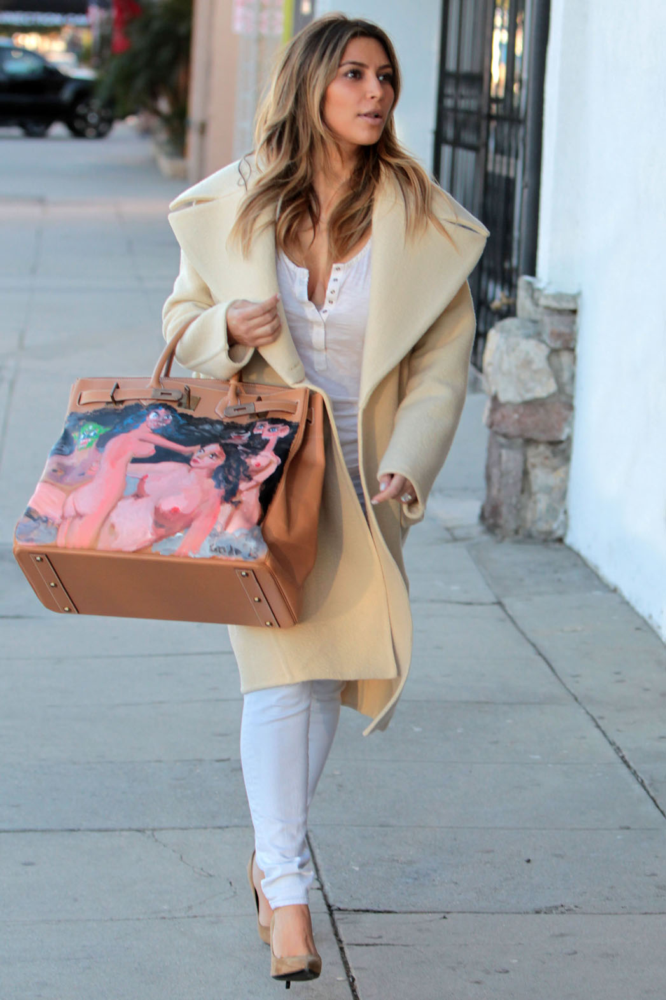
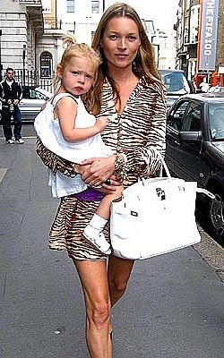
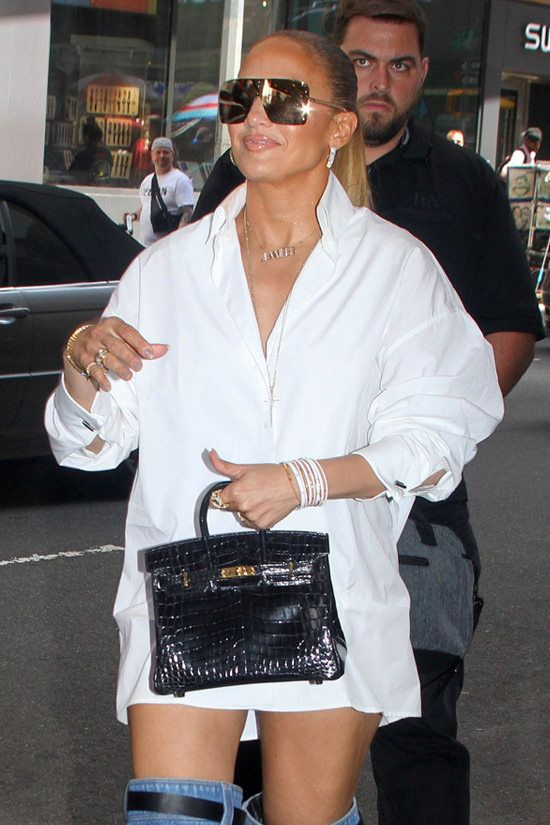
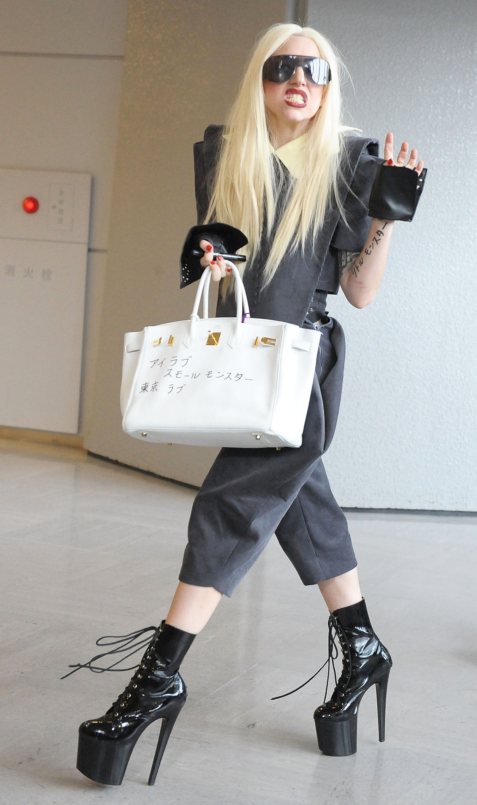
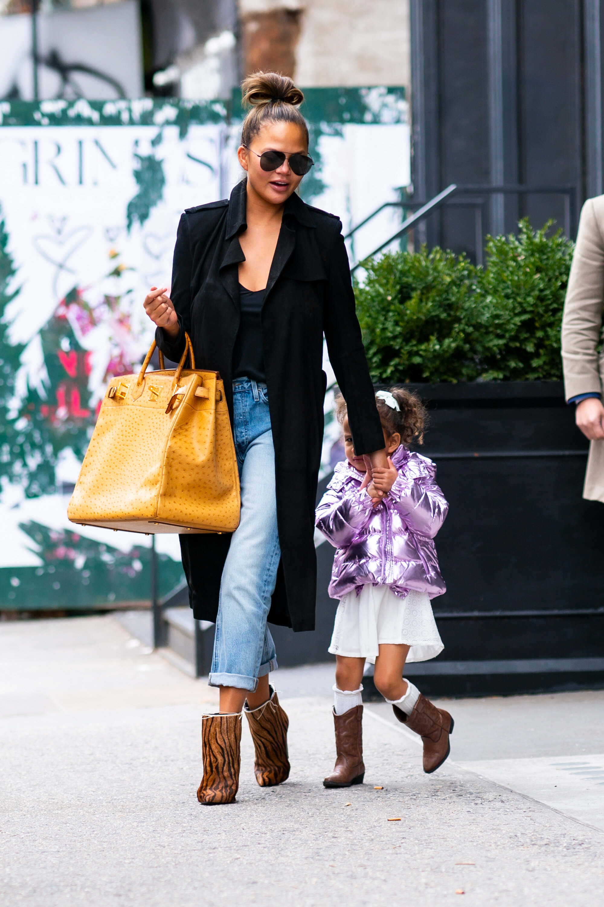
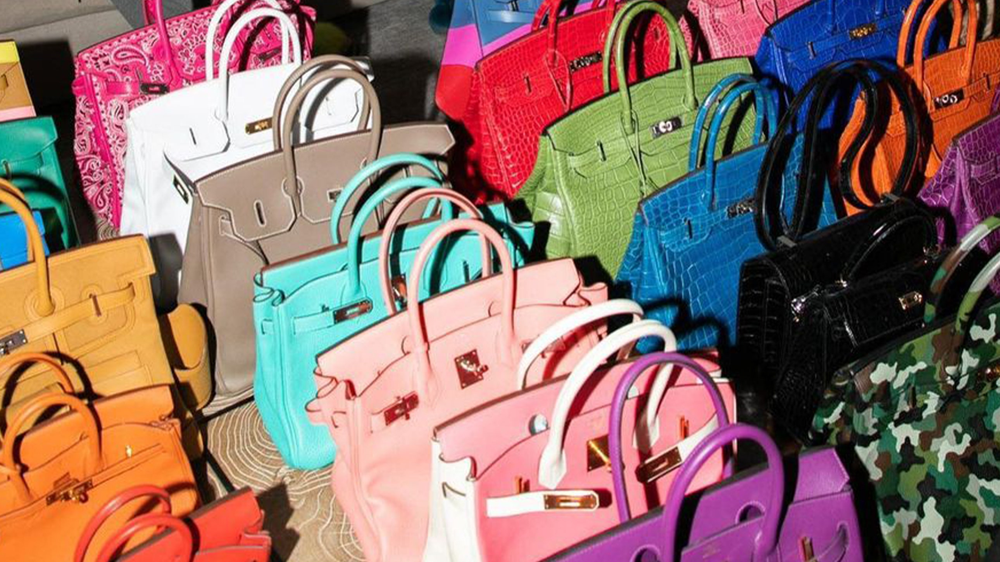
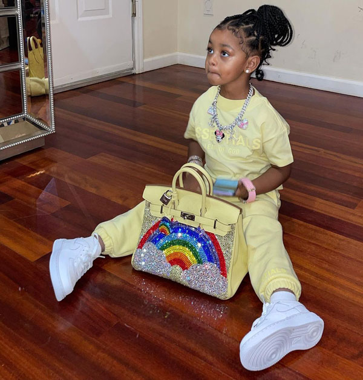

“The Hermès Birkin bag is not just a bag, it’s a symbol of having ‘made it’, and the story of all the celebrities and style icons who have carried it in the past,” says Jesper Richardy, founder of Copenhagen emporium Time’s Up Vintage, whose starry clientele includes Jane Birkin herself.
 While Jane Birkin may have been the first celebrity to be blessed with a Birkin bag, many others have followed suit in acquiring the luxury item. Victoria Beckham, Kim Kardashian, and Kate Moss are just a small sampling of women who have added the Hermès handbag to their collections. Beckham is rumored to have a collection of Birkins worth over two million dollars, and has been pictured with quite an assortment of the Hermès bag over the years. Meanwhile, Kardashian has been seen wearing a hand painted Birkin by artist George Condo that is considered a priceless work of art. Moss is frequently seen out with her white Birkin with palladium hardware, which she wears with the flap and lock closure open for a casual off duty look.
  Victoria Beckham is not the only one with an expansive collection, Cardi B's collection totals 26 Birkin Bags, and she recently bought a $48,000 Rainbow Birkin Bag for her three year-old daughter, Kulture.
 